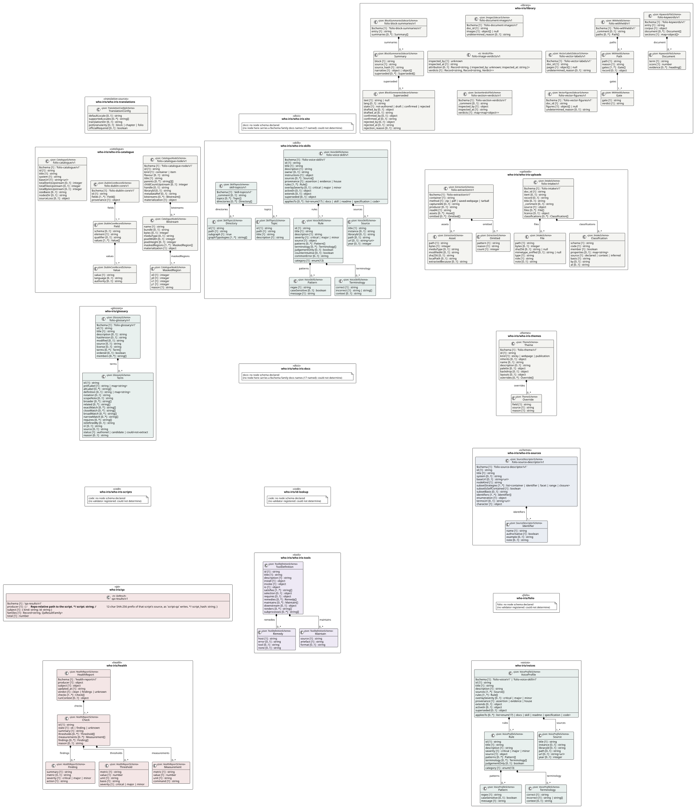
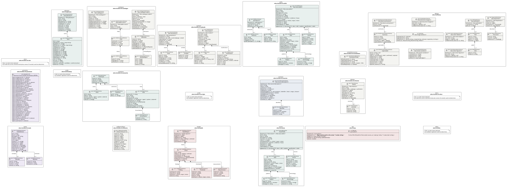

UML — who-iris
Generated by cat-harness-tools/scripts/gen-uml-overview.ts — do not edit. Every named sub-graph the who-iris instance declares, one box each, with the node schema kinds found in it.
Sources (same model): PlantUML · Mermaid · Graphviz DOT


The interactive view lays this diagram out in your browser with Graphviz, and needs JavaScript. Without it, pick Portrait or Landscape, or read the DOT source.
| sub-graph | directory | graph typologies | node schema | nodes | cohesion | in | out |
|---|---|---|---|---|---|---|---|
who-iris/who-iris-translations | who-iris/translations | translation-sources | TranslationConfigSchema | not measured | |||
who-iris/library | who-iris/library | library | ImagesSidecarSchema; ts: VerdictFile; SectionVerdictFileSchema; VectorLabelsSidecarSchema; VectorFiguresSidecarSchema; BlockSummariesSidecarSchema; KeywordsFileSchema; WithheldSchema | not measured | |||
who-iris/who-iris-site | who-iris/site | docs | docs: could not determine | not measured | |||
who-iris/who-iris-catalogue | who-iris/catalogue | catalogue | DublinCoreRecordSchema; CatalogueNodeSchema; CatalogueSchema | not measured | |||
who-iris/who-iris-uploads | who-iris/uploads | uploads | ExtractionSchema; IntakeSchema | not measured | |||
who-iris/who-iris-skills | who-iris/skills | skills | VoiceSkillSchema; SkillTopicsSchema | 12 | 1.00 | 0 | 0 |
who-iris/glossary | who-iris/glossary | glossary | GlossarySchema | not measured | |||
who-iris/who-iris-themes | who-iris/themes | themes | ThemeSchema | not measured | |||
who-iris/who-iris-docs | who-iris/docs | docs | docs: could not determine | not measured | |||
who-iris/who-iris-processes | who-iris/processes | processes | ext: omg-bpmn-2.0 | not measured | |||
who-iris/who-iris-scripts | who-iris/scripts | code | code: could not determine | not measured | |||
who-iris/who-iris-sources | who-iris/sources | schemas | SourceDescriptorSchema | not measured | |||
who-iris/id-lookup | who-iris/id-lookup | code | code: could not determine | not measured | |||
who-iris/qa | who-iris/test/results | qa | ts: QaResult | not measured | |||
who-iris/folio | who-iris/folio | folio | folio: could not determine | not measured | |||
who-iris/who-iris-tools | who-iris/tools | tools | ToolDefinitionSchema | not measured | |||
who-iris/who-iris-libraries | who-iris/libraries | software-library | SoftwareLibraryKind | not measured | |||
who-iris/health | who-iris/test/health/results | health | HealthReportSchema | not measured | |||
who-iris/voices | who-iris/skills/voices | voices | VoiceProfileSchema | 6 | 0.00 | 0 | 0 |
Nodes, cohesion, in and out are the detangler’s pinned measurements for the same directory (bun run cat kg:detangle; skill graph-detanglement). Not measured means the detangler does not scan that directory, not that it has no edges.
Sub-graphs
- who-iris/who-iris-translations
- who-iris/library
- who-iris/who-iris-site
- who-iris/who-iris-catalogue
- who-iris/who-iris-uploads
- who-iris/who-iris-skills
- who-iris/glossary
- who-iris/who-iris-themes
- who-iris/who-iris-docs
- who-iris/who-iris-processes
- who-iris/who-iris-scripts
- who-iris/who-iris-sources
- who-iris/id-lookup
- who-iris/qa
- who-iris/folio
- who-iris/who-iris-tools
- who-iris/who-iris-libraries
- who-iris/health
- who-iris/voices
The same model, drawn by Mermaid
Kept so the page renders even where the PlantUML image is missing, and because Mermaid nodes carry the CSS class that colours them from uml.css.
classDiagram
direction LR
namespace who_iris__who_iris_translations {
class who_iris_who_iris_translations_TranslationConfig["TranslationConfig"] {
<<json: TranslationConfigSchema>>
defaultLocale [0..1] string
supportedLocales [0..*] string[]
translationDir [0..1] string
potGranularity [0..1] block | chapter | folio
officialRequired [0..1] boolean
}
}
namespace who_iris__library {
class who_iris_library_folio_document_images_v1_folio_document_images_v1["folio-document-images/v1"] {
<<json: ImagesSidecarSchema>>
$schema [1] 'folio-document-images/v1'
doc_id [1] string
images [1] object[] | null
undetermined_reason [0..1] string
}
class who_iris_library_folio_image_verdicts_v1["folio-image-verdicts/v1"] {
<<ts: VerdictFile>>
inspected_by [1] unknown
inspected_at [1] string
attribution [0..1] Record~string, inspected_by: unknown; inspected_at: string ~
verdicts [1] Record~string, Record~string, Verdict~~
}
class who_iris_library_folio_section_verdicts_v1_folio_section_verdicts_v1["folio-section-verdicts/v1"] {
<<json: SectionVerdictFileSchema>>
$schema [1] 'folio-section-verdicts/v1'
_comment [0..1] string
inspected_by [1] object
inspected_at [1] string
verdicts [1] map~map~object~~
}
class who_iris_library_folio_vector_labels_v1_folio_vector_labels_v1["folio-vector-labels/v1"] {
<<json: VectorLabelsSidecarSchema>>
$schema [1] 'folio-vector-labels/v1'
doc_id [1] string
pages [1] object[] | null
undetermined_reason [0..1] string
}
class who_iris_library_folio_vector_figures_v1_folio_vector_figures_v1["folio-vector-figures/v1"] {
<<json: VectorFiguresSidecarSchema>>
$schema [1] 'folio-vector-figures/v1'
doc_id [1] string
figures [1] object[] | null
undetermined_reason [0..1] string
}
class who_iris_library_folio_block_summaries_v1_Superseded["Superseded"] {
<<json: BlockSummariesSidecarSchema>>
text [1] string | null
lang [0..1] string
state [1] not-authored | draft | confirmed | rejected
drafted_by [0..1] object
drafted_at [0..1] string
confirmed_by [0..1] object
confirmed_at [0..1] string
rejected_by [0..1] object
rejected_at [0..1] string
rejection_reason [0..1] string
}
class who_iris_library_folio_block_summaries_v1_Summary["Summary"] {
<<json: BlockSummariesSidecarSchema>>
block [1] string
source [1] string
source_hash [1] string
narrative [1] object | object[]
superseded [0..*] Superseded[]
}
class who_iris_library_folio_block_summaries_v1_folio_block_summaries_v1["folio-block-summaries/v1"] {
<<json: BlockSummariesSidecarSchema>>
$schema [1] 'folio-block-summaries/v1'
entry [1] string
summaries [0..*] Summary[]
}
class who_iris_library_folio_keywords_v1_Document["Document"] {
<<json: KeywordsFileSchema>>
term [1] string
score [1] number
evidence [0..*] heading[]
}
class who_iris_library_folio_keywords_v1_folio_keywords_v1["folio-keywords/v1"] {
<<json: KeywordsFileSchema>>
$schema [1] 'folio-keywords/v1'
entry [1] string
corpus [1] object
document [0..*] Document[]
sections [1] map~object[]~
}
class who_iris_library_folio_withheld_v1_Gate["Gate"] {
<<json: WithheldSchema>>
gate [1] string
verdict [1] string
}
class who_iris_library_folio_withheld_v1_Path["Path"] {
<<json: WithheldSchema>>
path [1] string
reason [1] string
gates [1..*] Gate[]
record [0..1] object
}
class who_iris_library_folio_withheld_v1_folio_withheld_v1["folio-withheld/v1"] {
<<json: WithheldSchema>>
$schema [1] 'folio-withheld/v1'
_comment [0..1] string
paths [0..*] Path[]
}
}
namespace who_iris__who_iris_site {
class n_who_iris_who_iris_site_docs["docs: no node schema"] {
<<could not determine>>
}
}
namespace who_iris__who_iris_catalogue {
class who_iris_who_iris_catalogue_folio_dublin_core_v1_Value["Value"] {
<<json: DublinCoreRecordSchema>>
value [1] string
language [0..1] string
authority [0..1] string
}
class who_iris_who_iris_catalogue_folio_dublin_core_v1_Field["Field"] {
<<json: DublinCoreRecordSchema>>
schema [0..1] string
element [1] string
qualifier [0..1] string
values [1..*] Value[]
}
class who_iris_who_iris_catalogue_folio_dublin_core_v1_folio_dublin_core_v1["folio-dublin-core/v1"] {
<<json: DublinCoreRecordSchema>>
$schema [1] 'folio-dublin-core/v1'
id [1] string
fields [1..*] Field[]
provenance [1] object
}
class who_iris_who_iris_catalogue_folio_catalogue_node_v1_MaskedRegion["MaskedRegion"] {
<<json: CatalogueNodeSchema>>
x0 [1] integer
y0 [1] integer
x1 [1] integer
y1 [1] integer
reason [1] string
}
class who_iris_who_iris_catalogue_folio_catalogue_node_v1_Bitstream["Bitstream"] {
<<json: CatalogueNodeSchema>>
name [1] string
bundle [0..1] string
bytes [0..1] integer
mediaType [0..1] string
pixelWidth [0..1] integer
pixelHeight [0..1] integer
maskedRegions [1..*] MaskedRegion[]
materialization [1] object
}
class who_iris_who_iris_catalogue_folio_catalogue_node_v1_folio_catalogue_node_v1["folio-catalogue-node/v1"] {
<<json: CatalogueNodeSchema>>
$schema [1] 'folio-catalogue-node/v1'
id [1] string
kind [1] container | item
flavour [0..1] string
title [1] string
parents [0..*] string[][]
childCountUpstream [0..1] integer
handle [0..1] string
libraryId [0..1] string
metadataRef [0..1] string
bitstreams [0..*] Bitstream[]
materialization [1] object
}
class who_iris_who_iris_catalogue_folio_catalogue_v1_folio_catalogue_v1["folio-catalogue/v1"] {
<<json: CatalogueSchema>>
$schema [1] 'folio-catalogue/v1'
id [1] string
title [1] string
system [1] string
baseUrl [1] string~uri~
totalItemsUpstream [0..1] integer
totalFilesUpstream [0..1] integer
totalBytesUpstream [0..1] integer
sizeBasis [0..1] string
nodesDir [0..1] string
sourceLoss [0..1] object
}
}
namespace who_iris__who_iris_uploads {
class who_iris_who_iris_uploads_folio_extraction_v1_Asset["Asset"] {
<<json: ExtractionSchema>>
path [1] string
bytes [1] integer
mediaType [0..1] string
modifiedAt [0..1] string
sha256 [0..1] string
localPath [0..1] string
extractedBecause [0..1] string
}
class who_iris_who_iris_uploads_folio_extraction_v1_Omitted["Omitted"] {
<<json: ExtractionSchema>>
pattern [1] string
reason [1] string
count [1] integer
}
class who_iris_who_iris_uploads_folio_extraction_v1_folio_extraction_v1["folio-extraction/v1"] {
<<json: ExtractionSchema>>
$schema [1] 'folio-extraction/v1'
container [1] string
method [1] zip | pdf | saved-webpage | tarball
capturedAt [0..1] string
producer [0..1] string
readAt [1] string
assets [0..*] Asset[]
omitted [0..*] Omitted[]
}
class who_iris_who_iris_uploads_folio_intake_v1_File["File"] {
<<json: IntakeSchema>>
path [1] string
bytes [0..1] integer
sha256 [0..1] string | null
mimetype_sniffed [0..1] string | null
type [1] string
role [1] string
note [0..1] string
}
class who_iris_who_iris_uploads_folio_intake_v1_Classification["Classification"] {
<<json: IntakeSchema>>
scheme [1] string
code [1] string
member [1] boolean
properties [0..1] map~string~
source [1] declared | context | inferred
basis [1] string
by [0..1] string
at [0..1] string
}
class who_iris_who_iris_uploads_folio_intake_v1_folio_intake_v1["folio-intake/v1"] {
<<json: IntakeSchema>>
$schema [1] 'folio-intake/v1'
doc_id [1] string
item [0..1] string
record [0..1] string
title [0..1] string
_comment [0..1] string
source [1] object
files [0..*] File[]
licence [0..1] object
classifications [0..*] Classification[]
}
}
namespace who_iris__who_iris_skills {
class who_iris_who_iris_skills_folio_voice_skill_v1_Source["Source"] {
<<json: VoiceSkillSchema>>
title [1] string
instance [0..1] string
libraryId [0..1] string
path [0..1] string
url [0..1] string~uri~
year [0..1] integer
}
class who_iris_who_iris_skills_folio_voice_skill_v1_Pattern["Pattern"] {
<<json: VoiceSkillSchema>>
regex [1] string
caseSensitive [0..1] boolean
message [1] string
}
class who_iris_who_iris_skills_folio_voice_skill_v1_Terminology["Terminology"] {
<<json: VoiceSkillSchema>>
correct [1] string
incorrect [1] string | string[]
context [0..1] string
}
class who_iris_who_iris_skills_folio_voice_skill_v1_Rule["Rule"] {
<<json: VoiceSkillSchema>>
id [1] string
title [1] string
description [1] string
category [1] enum(13)
severity [1] critical | major | minor
source [1] object
patterns [0..*] Pattern[]
terminology [0..*] Terminology[]
judgementOnly [0..1] boolean
counterintuitive [0..1] boolean
commonError [0..1] string
}
class who_iris_who_iris_skills_folio_voice_skill_v1_folio_voice_skill_v1["folio-voice-skill/v1"] {
<<json: VoiceSkillSchema>>
$schema [1] 'folio-voice-skill/v1'
id [1] string
title [1] string
description [1] string
owner [0..1] string
instructions [1] object
sources [0..*] Source[]
provenance [1] assertion | evidence | house
rules [1..*] Rule[]
overlaySeverity [0..1] critical | major | minor
appliesTo [0..*] list~enum(17) | docs | skill | readme | specification | code~
activeIn [0..1] object
extends [0..1] object
superseded [0..1] object
}
class who_iris_who_iris_skills_skill_topics_v1_Topic["Topic"] {
<<json: SkillTopicsSchema>>
id [1] string
path [1] string
title [1] string
description [1] string
}
class who_iris_who_iris_skills_skill_topics_v1_Directory["Directory"] {
<<json: SkillTopicsSchema>>
id [1] string
path [1] string
subgraph [1] true
graphTypologies [1..*] string[]
}
class who_iris_who_iris_skills_skill_topics_v1_skill_topics_v1["skill-topics/v1"] {
<<json: SkillTopicsSchema>>
$schema [1] 'skill-topics/v1'
_comment [0..1] string
topics [0..*] Topic[]
directories [0..*] Directory[]
}
}
namespace who_iris__glossary {
class who_iris_glossary_folio_glossary_v1_Term["Term"] {
<<json: GlossarySchema>>
id [1] string
prefLabel [1] string | map~string~
altLabel [0..*] string[]
definition [0..1] string | map~string~
notation [0..1] string
scopeNote [0..1] string
broader [0..*] string[]
related [0..*] string[]
exactMatch [0..*] string[]
closeMatch [0..*] string[]
broadMatch [0..*] string[]
narrowMatch [0..*] string[]
requires [0..*] string[]
isDefinedBy [0..1] string
iri [0..1] string
source [0..1] string
status [1] authored | candidate | could-not-extract
reason [0..1] string
}
class who_iris_glossary_folio_glossary_v1_folio_glossary_v1["folio-glossary/v1"] {
<<json: GlossarySchema>>
$schema [1] 'folio-glossary/v1'
id [1] string
title [1] string
description [0..1] string
hasVersion [0..1] string
modified [0..1] string
source [0..1] string
license [0..1] string
terms [0..*] Term[]
ordered [0..1] boolean
members [0..*] string[]
}
}
namespace who_iris__who_iris_themes {
class who_iris_who_iris_themes_Override["Override"] {
<<json: ThemeSchema>>
field [1] string
source [1] string
reason [1] string
}
class who_iris_who_iris_themes_Theme["Theme"] {
<<json: ThemeSchema>>
$schema [1] 'folio-theme/v1'
id [1] string
kind [1] sticky | webpage | publication
inherits [0..1] object
name [0..1] string
description [0..1] string
palette [0..1] object
backdrop [0..1] object
layouts [0..1] object
overrides [0..*] Override[]
}
}
namespace who_iris__who_iris_docs {
class n_who_iris_who_iris_docs_docs["docs: no node schema"] {
<<could not determine>>
}
}
namespace who_iris__who_iris_processes {
class who_iris_who_iris_processes_omg_bpmn_2_0["Business Process Model and Notation (BPMN)"] {
<<ext: omg-bpmn-2.0>>
bpmn:assignment [0..*] element
bpmn:callActivity [0..*] element
bpmn:collaboration [0..*] element
bpmn:dataInput [0..*] element
bpmn:dataInputAssociation [0..*] element
bpmn:dataInputRefs [0..*] element
bpmn:definitions [0..*] element
bpmn:documentation [0..*] element
bpmn:endEvent [0..*] element
bpmn:exclusiveGateway [0..*] element
bpmn:extensionElements [0..*] element
bpmn:flowNodeRef [0..*] element
bpmn:from [0..*] element
bpmn:globalScriptTask [0..*] element
bpmn:globalTask [0..*] element
bpmn:import [0..*] element
bpmn:incoming [0..*] element
bpmn:inputSet [0..*] element
bpmn:ioSpecification [0..*] element
bpmn:lane [0..*] element
bpmn:laneSet [0..*] element
bpmn:outgoing [0..*] element
bpmn:outputSet [0..*] element
bpmn:parallelGateway [0..*] element
bpmn:participant [0..*] element
bpmn:process [0..*] element
bpmn:resource [0..*] element
bpmn:sequenceFlow [0..*] element
bpmn:serviceTask [0..*] element
bpmn:startEvent [0..*] element
bpmn:targetRef [0..*] element
bpmn:task [0..*] element
bpmn:timerEventDefinition [0..*] element
bpmn:to [0..*] element
bpmn:userTask [0..*] element
}
}
namespace who_iris__who_iris_scripts {
class n_who_iris_who_iris_scripts_code["code: no node schema"] {
<<could not determine>>
}
}
namespace who_iris__who_iris_sources {
class who_iris_who_iris_sources_folio_source_descriptor_v1_Identifier["Identifier"] {
<<json: SourceDescriptorSchema>>
name [1] string
authoritative [1] boolean
example [0..1] string
note [0..1] string
}
class who_iris_who_iris_sources_folio_source_descriptor_v1_folio_source_descriptor_v1["folio-source-descriptor/v1"] {
<<json: SourceDescriptorSchema>>
$schema [1] 'folio-source-descriptor/v1'
id [1] string
title [1] string
system [0..1] string
baseUrl [0..1] string~uri~
nodeKind [1] string
subsetStrategies [1..*] list~container | identifier | facet | range | closure~
subsetIsSelfContained [1] boolean
subsetBasis [0..1] string
identifiers [1..*] Identifier[]
enumeration [1] object
termsUrl [0..1] string~uri~
character [1] object
}
}
namespace who_iris__id_lookup {
class n_who_iris_id_lookup_code["code: no node schema"] {
<<could not determine>>
}
}
namespace who_iris__qa {
class who_iris_qa_qa_results_v1["qa-results/v1"] {
<<ts: QaResult>>
$schema [1] 'qa-results/v1'
producer [1] /** Repo-relative path to the script. */ script: string; /** 12-char SHA-256 prefix of that script's source, as `script-qa` writes. */ script_hash: string;
subject [1] kind: string; id: string
families [1] Record~string, QaResultFamily~
total [1] number
}
}
namespace who_iris__folio {
class n_who_iris_folio_folio["folio: no node schema"] {
<<could not determine>>
}
}
namespace who_iris__who_iris_tools {
class who_iris_who_iris_tools_Remedy["Remedy"] {
<<json: ToolDefinitionSchema>>
host [1] string
error [0..1] string
tool [0..1] string
none [0..1] string
}
class who_iris_who_iris_tools_Maintain["Maintain"] {
<<json: ToolDefinitionSchema>>
source [1] string
artefact [1] string
format [0..1] string
}
class who_iris_who_iris_tools_ToolDefinition["ToolDefinition"] {
<<json: ToolDefinitionSchema>>
id [1] string
title [1] string
description [1] string
install [1] object
invoke [1] object
io [1] object
satisfies [1..*] string[]
selection [0..1] object
requires [0..1] object
remedies [0..*] Remedy[]
maintains [0..*] Maintain[]
downstream [0..1] object
renders [0..*] string[]
subprocesses [0..*] string[]
}
}
namespace who_iris__who_iris_libraries {
class who_iris_who_iris_libraries_software_library_1_0_0_software_library_1_0_0["software-library/1.0.0"] {
<<json: SoftwareLibraryKind>>
name [1] string
version [1] string
digest [1] object
source [1] object
licence [1] string
licenceSource [1] string
range [0..1] string
dev [0..1] boolean
vendored [0..1] object
layer [0..1] string
usedBy [0..*] string[]
shim [0..1] string
$schema [1] string
}
}
namespace who_iris__health {
class who_iris_health_Threshold["Threshold"] {
<<json: HealthReportSchema>>
metric [1] string
value [1] number
unit [1] string
basis [1] string
severity [1] critical | major | minor
}
class who_iris_health_Measurement["Measurement"] {
<<json: HealthReportSchema>>
metric [1] string
value [1] number
unit [1] string
command [1] string
}
class who_iris_health_Finding["Finding"] {
<<json: HealthReportSchema>>
summary [1] string
metric [0..1] string
severity [1] critical | major | minor
action [1] string
}
class who_iris_health_Check["Check"] {
<<json: HealthReportSchema>>
id [1] string
state [1] ok | finding | unknown
summary [1] string
thresholds [0..*] Threshold[]
measurements [0..*] Measurement[]
findings [0..*] Finding[]
reason [0..1] string
}
class who_iris_health_HealthReport["HealthReport"] {
<<json: HealthReportSchema>>
$schema [1] 'health-report/v1'
producer [1] object
subject [1] object
updated_at [1] string
verdict [1] clean | findings | unknown
checks [1..*] Check[]
runContext [0..1] object
}
}
namespace who_iris__voices {
class who_iris_voices_Source["Source"] {
<<json: VoiceProfileSchema>>
title [1] string
instance [0..1] string
libraryId [0..1] string
path [0..1] string
url [0..1] string~uri~
year [0..1] integer
}
class who_iris_voices_Pattern["Pattern"] {
<<json: VoiceProfileSchema>>
regex [1] string
caseSensitive [0..1] boolean
message [1] string
}
class who_iris_voices_Terminology["Terminology"] {
<<json: VoiceProfileSchema>>
correct [1] string
incorrect [1] string | string[]
context [0..1] string
}
class who_iris_voices_Rule["Rule"] {
<<json: VoiceProfileSchema>>
id [1] string
title [1] string
description [1] string
category [1] enum(13)
severity [1] critical | major | minor
source [1] object
patterns [0..*] Pattern[]
terminology [0..*] Terminology[]
judgementOnly [0..1] boolean
}
class who_iris_voices_VoiceProfile["VoiceProfile"] {
<<json: VoiceProfileSchema>>
$schema [1] 'folio-voice/v1' | 'folio-voice-skill/v1'
id [1] string
title [1] string
description [1] string
sources [1..*] Source[]
rules [1..*] Rule[]
overlaySeverity [0..1] critical | major | minor
appliesTo [0..*] list~enum(17) | docs | skill | readme | specification | code~
provenance [1] assertion | evidence | house
extends [0..1] object
activeIn [0..1] object
superseded [0..1] object
}
}
cssClass "who_iris_who_iris_translations_TranslationConfig" fa_uml_kind_translation_sources
who_iris_library_folio_block_summaries_v1_Summary *-- "0..*" who_iris_library_folio_block_summaries_v1_Superseded : superseded
who_iris_library_folio_block_summaries_v1_folio_block_summaries_v1 *-- "0..*" who_iris_library_folio_block_summaries_v1_Summary : summaries
who_iris_library_folio_keywords_v1_folio_keywords_v1 *-- "0..*" who_iris_library_folio_keywords_v1_Document : document
who_iris_library_folio_withheld_v1_Path *-- "1..*" who_iris_library_folio_withheld_v1_Gate : gates
who_iris_library_folio_withheld_v1_folio_withheld_v1 *-- "0..*" who_iris_library_folio_withheld_v1_Path : paths
cssClass "who_iris_library_folio_document_images_v1_folio_document_images_v1" fa_uml_kind_library
cssClass "who_iris_library_folio_image_verdicts_v1" fa_uml_kind_library
cssClass "who_iris_library_folio_section_verdicts_v1_folio_section_verdicts_v1" fa_uml_kind_library
cssClass "who_iris_library_folio_vector_labels_v1_folio_vector_labels_v1" fa_uml_kind_library
cssClass "who_iris_library_folio_vector_figures_v1_folio_vector_figures_v1" fa_uml_kind_library
cssClass "who_iris_library_folio_block_summaries_v1_Superseded" fa_uml_kind_library
cssClass "who_iris_library_folio_block_summaries_v1_Summary" fa_uml_kind_library
cssClass "who_iris_library_folio_block_summaries_v1_folio_block_summaries_v1" fa_uml_kind_library
cssClass "who_iris_library_folio_keywords_v1_Document" fa_uml_kind_library
cssClass "who_iris_library_folio_keywords_v1_folio_keywords_v1" fa_uml_kind_library
cssClass "who_iris_library_folio_withheld_v1_Gate" fa_uml_kind_library
cssClass "who_iris_library_folio_withheld_v1_Path" fa_uml_kind_library
cssClass "who_iris_library_folio_withheld_v1_folio_withheld_v1" fa_uml_kind_library
cssClass "n_who_iris_who_iris_site_docs" fa_uml_kind_docs
cssClass "n_who_iris_who_iris_site_docs" fa_uml_undetermined
who_iris_who_iris_catalogue_folio_dublin_core_v1_Field *-- "1..*" who_iris_who_iris_catalogue_folio_dublin_core_v1_Value : values
who_iris_who_iris_catalogue_folio_dublin_core_v1_folio_dublin_core_v1 *-- "1..*" who_iris_who_iris_catalogue_folio_dublin_core_v1_Field : fields
who_iris_who_iris_catalogue_folio_catalogue_node_v1_Bitstream *-- "1..*" who_iris_who_iris_catalogue_folio_catalogue_node_v1_MaskedRegion : maskedRegions
who_iris_who_iris_catalogue_folio_catalogue_node_v1_folio_catalogue_node_v1 *-- "0..*" who_iris_who_iris_catalogue_folio_catalogue_node_v1_Bitstream : bitstreams
cssClass "who_iris_who_iris_catalogue_folio_dublin_core_v1_Value" fa_uml_kind_catalogue
cssClass "who_iris_who_iris_catalogue_folio_dublin_core_v1_Field" fa_uml_kind_catalogue
cssClass "who_iris_who_iris_catalogue_folio_dublin_core_v1_folio_dublin_core_v1" fa_uml_kind_catalogue
cssClass "who_iris_who_iris_catalogue_folio_catalogue_node_v1_MaskedRegion" fa_uml_kind_catalogue
cssClass "who_iris_who_iris_catalogue_folio_catalogue_node_v1_Bitstream" fa_uml_kind_catalogue
cssClass "who_iris_who_iris_catalogue_folio_catalogue_node_v1_folio_catalogue_node_v1" fa_uml_kind_catalogue
cssClass "who_iris_who_iris_catalogue_folio_catalogue_v1_folio_catalogue_v1" fa_uml_kind_catalogue
who_iris_who_iris_uploads_folio_extraction_v1_folio_extraction_v1 *-- "0..*" who_iris_who_iris_uploads_folio_extraction_v1_Asset : assets
who_iris_who_iris_uploads_folio_extraction_v1_folio_extraction_v1 *-- "0..*" who_iris_who_iris_uploads_folio_extraction_v1_Omitted : omitted
who_iris_who_iris_uploads_folio_intake_v1_folio_intake_v1 *-- "0..*" who_iris_who_iris_uploads_folio_intake_v1_File : files
who_iris_who_iris_uploads_folio_intake_v1_folio_intake_v1 *-- "0..*" who_iris_who_iris_uploads_folio_intake_v1_Classification : classifications
cssClass "who_iris_who_iris_uploads_folio_extraction_v1_Asset" fa_uml_kind_uploads
cssClass "who_iris_who_iris_uploads_folio_extraction_v1_Omitted" fa_uml_kind_uploads
cssClass "who_iris_who_iris_uploads_folio_extraction_v1_folio_extraction_v1" fa_uml_kind_uploads
cssClass "who_iris_who_iris_uploads_folio_intake_v1_File" fa_uml_kind_uploads
cssClass "who_iris_who_iris_uploads_folio_intake_v1_Classification" fa_uml_kind_uploads
cssClass "who_iris_who_iris_uploads_folio_intake_v1_folio_intake_v1" fa_uml_kind_uploads
who_iris_who_iris_skills_folio_voice_skill_v1_folio_voice_skill_v1 *-- "0..*" who_iris_who_iris_skills_folio_voice_skill_v1_Source : sources
who_iris_who_iris_skills_folio_voice_skill_v1_Rule *-- "0..*" who_iris_who_iris_skills_folio_voice_skill_v1_Pattern : patterns
who_iris_who_iris_skills_folio_voice_skill_v1_Rule *-- "0..*" who_iris_who_iris_skills_folio_voice_skill_v1_Terminology : terminology
who_iris_who_iris_skills_folio_voice_skill_v1_folio_voice_skill_v1 *-- "1..*" who_iris_who_iris_skills_folio_voice_skill_v1_Rule : rules
who_iris_who_iris_skills_skill_topics_v1_skill_topics_v1 *-- "0..*" who_iris_who_iris_skills_skill_topics_v1_Topic : topics
who_iris_who_iris_skills_skill_topics_v1_skill_topics_v1 *-- "0..*" who_iris_who_iris_skills_skill_topics_v1_Directory : directories
cssClass "who_iris_who_iris_skills_folio_voice_skill_v1_Source" fa_uml_kind_skills
cssClass "who_iris_who_iris_skills_folio_voice_skill_v1_Pattern" fa_uml_kind_skills
cssClass "who_iris_who_iris_skills_folio_voice_skill_v1_Terminology" fa_uml_kind_skills
cssClass "who_iris_who_iris_skills_folio_voice_skill_v1_Rule" fa_uml_kind_skills
cssClass "who_iris_who_iris_skills_folio_voice_skill_v1_folio_voice_skill_v1" fa_uml_kind_skills
cssClass "who_iris_who_iris_skills_skill_topics_v1_Topic" fa_uml_kind_skills
cssClass "who_iris_who_iris_skills_skill_topics_v1_Directory" fa_uml_kind_skills
cssClass "who_iris_who_iris_skills_skill_topics_v1_skill_topics_v1" fa_uml_kind_skills
who_iris_glossary_folio_glossary_v1_folio_glossary_v1 *-- "0..*" who_iris_glossary_folio_glossary_v1_Term : terms
cssClass "who_iris_glossary_folio_glossary_v1_Term" fa_uml_kind_glossary
cssClass "who_iris_glossary_folio_glossary_v1_folio_glossary_v1" fa_uml_kind_glossary
who_iris_who_iris_themes_Theme *-- "0..*" who_iris_who_iris_themes_Override : overrides
cssClass "who_iris_who_iris_themes_Override" fa_uml_kind_themes
cssClass "who_iris_who_iris_themes_Theme" fa_uml_kind_themes
cssClass "n_who_iris_who_iris_docs_docs" fa_uml_kind_docs
cssClass "n_who_iris_who_iris_docs_docs" fa_uml_undetermined
cssClass "who_iris_who_iris_processes_omg_bpmn_2_0" fa_uml_kind_processes
cssClass "n_who_iris_who_iris_scripts_code" fa_uml_kind_code
cssClass "n_who_iris_who_iris_scripts_code" fa_uml_undetermined
who_iris_who_iris_sources_folio_source_descriptor_v1_folio_source_descriptor_v1 *-- "1..*" who_iris_who_iris_sources_folio_source_descriptor_v1_Identifier : identifiers
cssClass "who_iris_who_iris_sources_folio_source_descriptor_v1_Identifier" fa_uml_kind_schemas
cssClass "who_iris_who_iris_sources_folio_source_descriptor_v1_folio_source_descriptor_v1" fa_uml_kind_schemas
cssClass "n_who_iris_id_lookup_code" fa_uml_kind_code
cssClass "n_who_iris_id_lookup_code" fa_uml_undetermined
cssClass "who_iris_qa_qa_results_v1" fa_uml_kind_qa
cssClass "n_who_iris_folio_folio" fa_uml_kind_folio
cssClass "n_who_iris_folio_folio" fa_uml_undetermined
who_iris_who_iris_tools_ToolDefinition *-- "0..*" who_iris_who_iris_tools_Remedy : remedies
who_iris_who_iris_tools_ToolDefinition *-- "0..*" who_iris_who_iris_tools_Maintain : maintains
cssClass "who_iris_who_iris_tools_Remedy" fa_uml_kind_tools
cssClass "who_iris_who_iris_tools_Maintain" fa_uml_kind_tools
cssClass "who_iris_who_iris_tools_ToolDefinition" fa_uml_kind_tools
cssClass "who_iris_who_iris_libraries_software_library_1_0_0_software_library_1_0_0" fa_uml_kind_software_library
who_iris_health_Check *-- "0..*" who_iris_health_Threshold : thresholds
who_iris_health_Check *-- "0..*" who_iris_health_Measurement : measurements
who_iris_health_Check *-- "0..*" who_iris_health_Finding : findings
who_iris_health_HealthReport *-- "1..*" who_iris_health_Check : checks
cssClass "who_iris_health_Threshold" fa_uml_kind_health
cssClass "who_iris_health_Measurement" fa_uml_kind_health
cssClass "who_iris_health_Finding" fa_uml_kind_health
cssClass "who_iris_health_Check" fa_uml_kind_health
cssClass "who_iris_health_HealthReport" fa_uml_kind_health
who_iris_voices_VoiceProfile *-- "1..*" who_iris_voices_Source : sources
who_iris_voices_Rule *-- "0..*" who_iris_voices_Pattern : patterns
who_iris_voices_Rule *-- "0..*" who_iris_voices_Terminology : terminology
who_iris_voices_VoiceProfile *-- "1..*" who_iris_voices_Rule : rules
cssClass "who_iris_voices_Source" fa_uml_kind_voices
cssClass "who_iris_voices_Pattern" fa_uml_kind_voices
cssClass "who_iris_voices_Terminology" fa_uml_kind_voices
cssClass "who_iris_voices_Rule" fa_uml_kind_voices
cssClass "who_iris_voices_VoiceProfile" fa_uml_kind_voices